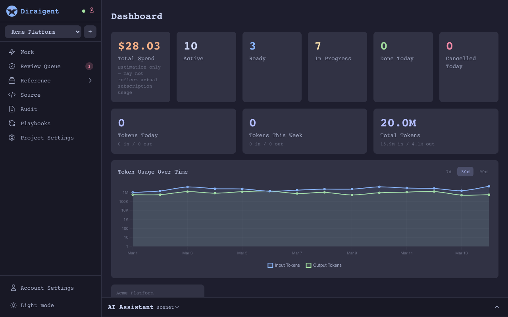
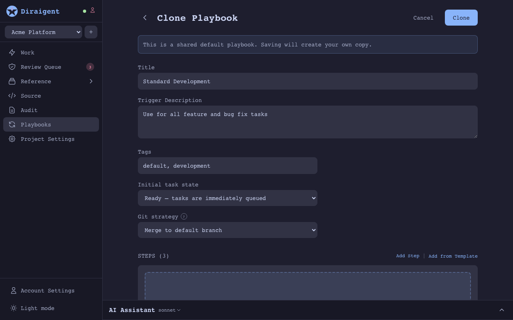
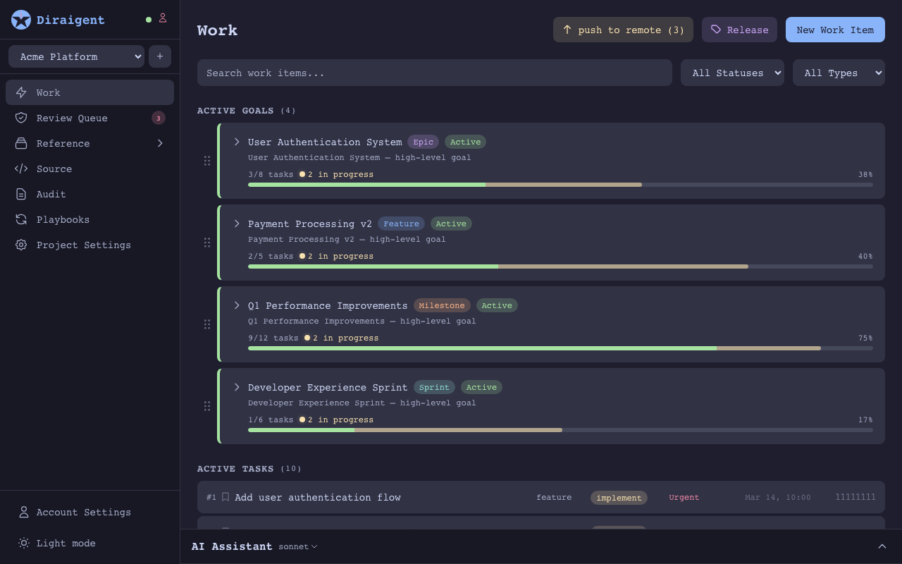
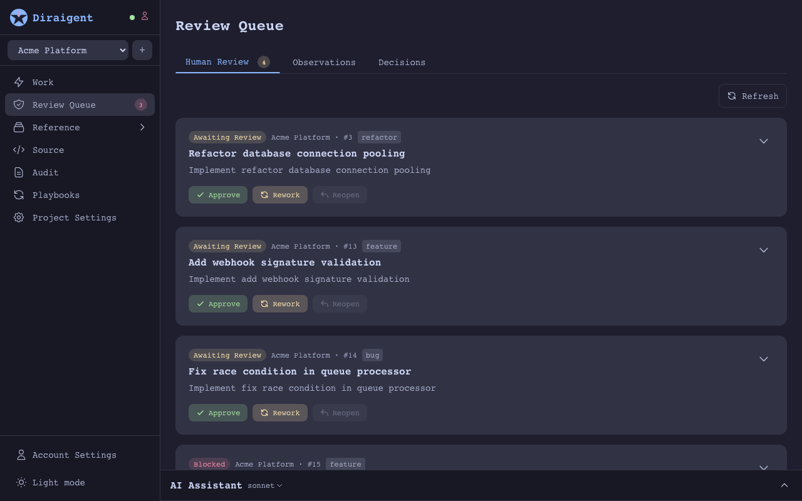
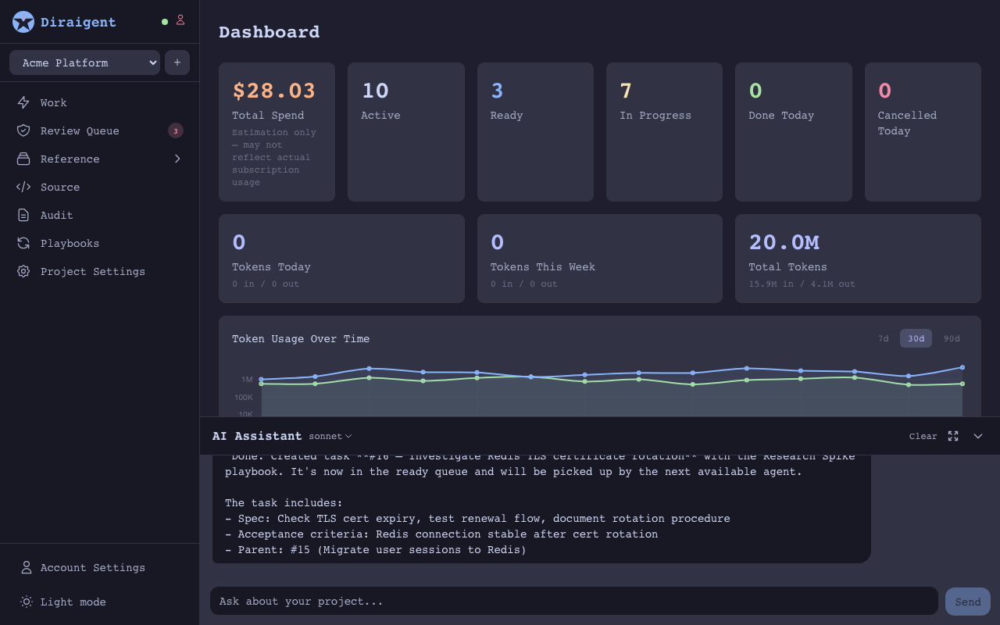

a self-hosted software factory — define goals, agents decompose and execute them through enforced pipelines, with humans in the loop where it matters.

Cloud-hosted agents that do everything behind closed doors. You can’t see the logs, can’t audit the process, can’t self-host. Your code leaves your network.
IDE plugins that help one developer at a time. Great for autocomplete, but they don’t orchestrate work across a team, manage releases, or enforce quality gates.
Throw agents at code and hope for the best. No enforced workflows, no state machines, no authority controls. When things go wrong, there’s no trail to follow.
diraigent is none of these.
Define multi-step playbooks with a validated state machine. Each step has entry conditions, exit criteria, and quality gates. Agents follow the pipeline exactly — no improvising, no shortcuts. If a step fails verification, the agent goes back.

Describe a high-level goal. Diraigent breaks it into concrete tasks, assigns playbooks, and dispatches agents in parallel. Epics, features, milestones — all visible on a kanban board with drag-and-drop ordering.

Merge conflicts, ambiguous requirements, quality gate failures — these surface in a review queue for human decision. Approve, rework, or resolve with full context. Agents handle the routine; you handle the judgment calls.

Knowledge entries, architectural decisions, and observations accumulate as agents work. The next task starts with everything the last one learned. This isn’t chat history — it’s structured project memory that persists across agents and sessions.

Not every agent should have the same power. Define roles with scoped authority — one agent writes code, another reviews, another handles releases. Each operates within its granted permissions.
Built-in release workflows with configurable merge strategies. Agents don’t just write code — they shepherd it through branch creation, merge resolution, and release tagging. The full lifecycle, not just the diff.
no agent tool does everything. here’s where diraigent sits.
| Capability | IDE Copilots | SaaS Agents | Open-Source Agents | Agent Orchestrators | diraigent |
|---|---|---|---|---|---|
| Multi-agent parallel execution | — | ✓ | — | ✓ | ✓ |
| Enforced pipeline state machine | — | — | — | — | ✓ |
| Goal-to-task decomposition | — | ~ | — | — | ✓ |
| Persistent project knowledge | — | — | — | — | ✓ |
| Human-in-the-loop review queue | — | — | — | — | ✓ |
| Role-based agent authority | — | — | — | — | ✓ |
| Release management | — | ~ | — | — | ✓ |
| Self-hosted / data sovereignty | — | — | ✓ | ✓ | ✓ |
| Full audit trail | — | — | ~ | ~ | ✓ |
Comparison based on publicly available information. Categories represent tool archetypes, not specific products.
Describe what you want at any level: an epic, a feature, a bug fix. Attach acceptance criteria.
The system breaks your goal into concrete tasks, selects playbooks, and queues work for agents.
Each task runs in its own git worktree. Multiple agents work in parallel with full logs and structured output.
Blockers, conflicts, and quality gate failures surface in your review queue. Approve, rework, or resolve.
Completed work merges through your configured strategy. Knowledge and decisions feed back into the project for the next cycle.
Compiled, type-safe, no garbage collector pauses. The API and orchestrator handle hundreds of concurrent agents.
Runs on your infrastructure. Your code, your data, your network. Nothing leaves your environment.
One docker-compose file. No Kubernetes required, no cloud dependencies, no vendor lock-in.
run diraigent on your own infrastructure.
requires currently claude code —
the orchestra spawns claude code workers in isolated git worktrees for each task.
curl -LO https://github.com/diraigent/diraigent/blob/main/startup/docker-compose.yml
curl -LO https://github.com/diraigent/diraigent/blob/main/startup/start.sh
curl -LO https://github.com/diraigent/diraigent/blob/main/startup/.env.example
cp .env.example .env # edit .env for your setup
chmod +x start.sh
./start.sh # registers agent, seeds playbooks, starts everything
the orchestra pushes branches and merges results back to your remote.
for this to work, git must be able to authenticate inside the container —
mount a .netrc file, an ssh key, or configure a credential helper.
without credentials, agents work locally but push/merge to remote will fail.